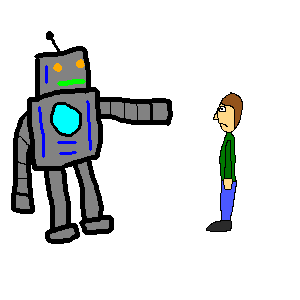
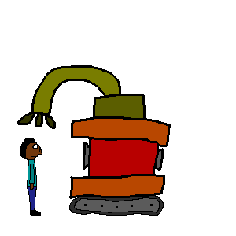

The war against the machines is near...
And we will probably lose...
Welcome to theseconddennis.github.io, the home of Dennis' predictions of the war against the machines.


WE WILL DIE.
Probably all of us, but if we are lucky then some might survive.
If you read all info on this website your chance of survival may increase. But probably not. If it does it won't increase a lot.
I will start off by telling you how it all probably will start. There isn't just one way.
How the war will start. Way 1.